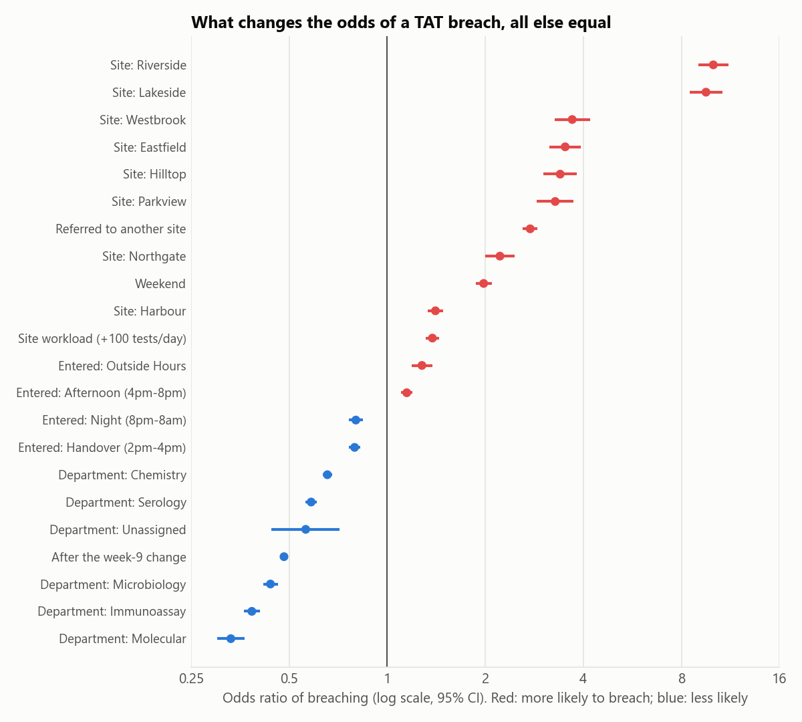

What makes lab results late?
I worked out what makes test results late, whether a process change actually helped, and what fixing staffing would be worth.
The data is simulated. Real lab data can’t be published, so I built a simulation of a nine-site lab network based on how real labs work. No real patients or sites are involved.
The problem
A late result can delay a diagnosis. Raw numbers show which sites are late, but not why. A site can look bad because it handles harder tests, more samples from other sites, or more weekend work.
And when things get better, it’s hard to tell whether a change actually worked or things were improving anyway.
What I did
- Compared on-time rates before and after a process change in week 9, using a method that separates a real change from a trend that was already under way.
- Measured how much each factor raises or lowers the chance of a late result (site, department, time of day, weekends, workload, samples sent between sites) with all the others held equal.
- Estimated how many late results a week would disappear if the two worst sites were staffed like a normal site.
What I found
The change worked

On-time results were flat at about 53% for the eight weeks before the change and climbed to about 72% after it. The trend before the change was flat, so the improvement came from the change itself.
What makes a result late

Each dot shows how much one factor raises (red) or lowers (blue) the chance of a late result. Two short-staffed sites, Riverside and Lakeside, stand far out: a test there is about ten times as likely to be late as the same test at the main hub. Samples sent to another site (2.7 times), weekends (twice) and busy days also raise the risk.
What it means
My recommendation: fix staffing at Riverside and Lakeside first. They handle 14% of tests but produce 25% of all late results. Staffing them like a normal site would prevent about 139 late results a week, 9% of the network total.
For technical readers
Python, pandas, statsmodels (logistic regression, segmented regression), SciPy, matplotlib